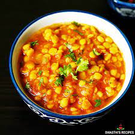

Chana Masoor

Chana Daal
Chana dal is a split lentil, also known as baby chickpeas, which is very popular in Indian Cuisine. It is highly nutritious, delicious and is used in both sweet and savory recipes due to its rich taste and aroma.
Go Back